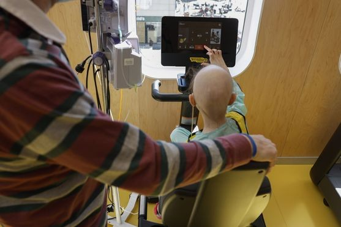

Obesidade, dieta, álcool e tabaco
Vários dos tumores em alta estão ligados ao excesso de peso3. No estudo global, dieta (muita carne vermelha e sódio, poucas frutas), álcool e tabaco foram os principais fatores de risco identificados2.
Por décadas, o câncer foi tratado como doença do envelhecimento. Hoje, adultos jovens recebem mais diagnósticos do que seus pais recebiam na mesma idade1. A pergunta que importa já não é só “quantos casos?”, mas “quais casos, por quê e diagnosticados quando?”.

São números absolutos: parte do aumento vem simplesmente de haver mais gente no mundo. É por isso que os estudos que usam taxas por 100 mil pessoas, mais abaixo, contam a história com mais precisão.
Ponto de partida: matéria do jornal espanhol El Confidencial (4 out. 2026) sobre a preocupação com o câncer entre jovens. Este infográfico vai às pesquisas originais por trás do tema.
Nos Estados Unidos, onde há registros que cobrem toda a população, 14 dos 33 tipos de câncer analisados aumentaram entre 2010 e 2019 em pelo menos uma faixa abaixo dos 50 anos, enquanto 19 tipos diminuíram, entre eles pulmão e próstata3. Ou seja: não é “todo câncer” subindo. É um grupo específico.
Cinco tumores responderam por mais de 80% dos casos adicionais: mama, colorretal, rim, útero e pâncreas. E 63% dos diagnósticos precoces ocorreram em mulheres3.
O colorretal é o que mais chama atenção fora dos EUA. Num levantamento de 50 países e territórios, a incidência em adultos de 25 a 49 anos subiu em 27 deles; em 20, a alta foi exclusiva dos jovens ou mais rápida que entre os mais velhos. As maiores altas anuais, perto de 4% ao ano, apareceram na Nova Zelândia e no Chile4.
Quando os pesquisadores organizam os dados por geração, e não só por idade, aparece um padrão. Comparando pessoas nascidas entre 1920 e 1990 nos EUA, 17 de 34 tipos de câncer têm incidência maior nas gerações mais novas, incluindo 9 que vinham caindo nas gerações anteriores1.
Quem nasceu em 1990 tem risco duas a três vezes maior de câncer de pâncreas, rim e intestino delgado do que quem nasceu em 1955, na mesma idade1.
[ Coloque aqui: img/geracoes-exposicao.png ]
Ilustração a gerar — ver prompt nº 1 no relatório
Nem sempre. Um diagnóstico depende de alguém procurar. Exames de imagem mais acessíveis e mais sensíveis encontram tumores pequenos que, em muitos casos, nunca causariam problema.
A mesma análise cética reconhece exceções: no colorretal e no endométrio, a mortalidade também sobe5. É ali que o alerta é mais difícil de explicar só pelo excesso de exames.
O estudo do Instituto Nacional do Câncer dos EUA chega a um quadro parecido: a mortalidade geral não aumentou nos jovens, mas subiu em pelo menos uma faixa abaixo dos 50 anos para quatro tumores: colorretal, útero, testículo e ossos e articulações3. Na análise por gerações, as mortes também cresceram nas gerações mais novas para colorretal, útero, vesícula, testículo e fígado em mulheres1.
E há o lado oposto: no câncer de mama, o mais comum antes dos 50, os diagnósticos sobem devagar, mas a mortalidade nessa faixa caiu aproximadamente pela metade5. Tratamento melhor também muda a curva.
O jovem raramente é o paciente que alguém espera ver com câncer, nem ele mesmo. Numa revisão de 39 estudos, adultos com menos de 50 anos tinham 76% mais chance de receber o diagnóstico de câncer colorretal já em estágio III ou IV, e os atrasos mais longos aconteciam antes do diagnóstico, entre o primeiro sintoma e a investigação6.
Outra revisão, com 81 estudos, mostrou que quase metade desses pacientes chega com sangue nas fezes e quase metade com dor abdominal; o tempo entre o sinal e o diagnóstico teve mediana de 4 meses e média de 6,4 meses7.
[ Coloque aqui: img/consulta-adulto-jovem.jpg ]
Foto real: adulto jovem em atendimento na atenção primária — ver relatório
A resposta honesta: ainda não se sabe. O que existe são hipóteses com graus muito diferentes de evidência.
Vários dos tumores em alta estão ligados ao excesso de peso3. No estudo global, dieta (muita carne vermelha e sódio, poucas frutas), álcool e tabaco foram os principais fatores de risco identificados2.
A colibactina, produzida por algumas bactérias intestinais, deixa uma “marca” no DNA. Em 981 tumores colorretais de 11 países, essa marca foi 3,3 vezes mais comum em quem adoeceu antes dos 40 do que depois dos 708. É associação, não prova de causa.
Mutações hereditárias de alto risco aparecem em 18,4% dos cânceres precoces, contra 12,3% dos tardios. Ou seja, cerca de 80% dos jovens com câncer não têm essa explicação, e genes não mudam em poucas décadas9.
Ultraprocessados, microplásticos, poluentes, sono, estresse, antibióticos e alterações da microbiota estão sendo investigados. Para muitos deles, ainda não há evidência epidemiológica forte910.
[ Coloque aqui: img/colibactina-dna.png ]
Ilustração a gerar — ver prompt nº 2 no relatório
O INCA estima 781 mil casos novos de câncer por ano entre 2026 e 2028, ou 518 mil sem contar o câncer de pele não melanoma11. O colorretal é o segundo mais frequente em homens e mulheres, com cerca de 53,8 mil casos por ano, e o próprio INCA destaca seu aumento como uma das principais tendências do triênio11.
As taxas passam de 20 casos por 100 mil habitantes no Sudeste e ficam perto disso no Sul e no Centro-Oeste11.
Há, porém, um limite importante. A estimativa nacional não separa os adultos jovens, e os registros de base populacional que a alimentam cobrem cerca de 25% da população brasileira. O INCA também alerta que as edições da estimativa não devem ser comparadas diretamente como tendência11. Para saber se o fenômeno se repete aqui na mesma intensidade, precisamos de registros melhores.
Na Espanha, de onde veio a matéria, a Sociedade Espanhola de Oncologia Médica estima mais de 8 mil cânceres em adultos jovens em 2026, a maioria em mulheres10.
Se uma cidade compra um tomógrafo novo e, no ano seguinte, registra mais casos de câncer de rim, a população dessa cidade ficou mais doente?
Antecipar o rastreamento colorretal para todos a partir dos 40 anos salvaria vidas no SUS, ou tiraria colonoscopias de quem já tem sintomas e está na fila?
Por que um jovem com sangue nas fezes demora mais para ser investigado do que um idoso com o mesmo sintoma? De quem é essa demora: do paciente, do profissional ou do sistema?
Se a exposição decisiva acontece na infância, como seria uma prevenção do câncer que começa na merenda escolar, e não no consultório do adulto?
Cada círculo é uma referência deste infográfico; cada linha, uma relação de sentido entre duas delas. Toque num artigo para ler o comentário e ver com quem ele dialoga.
As relações de complementar e contrapor são uma leitura editorial nossa; as de citar ou resumir constam nos próprios documentos.